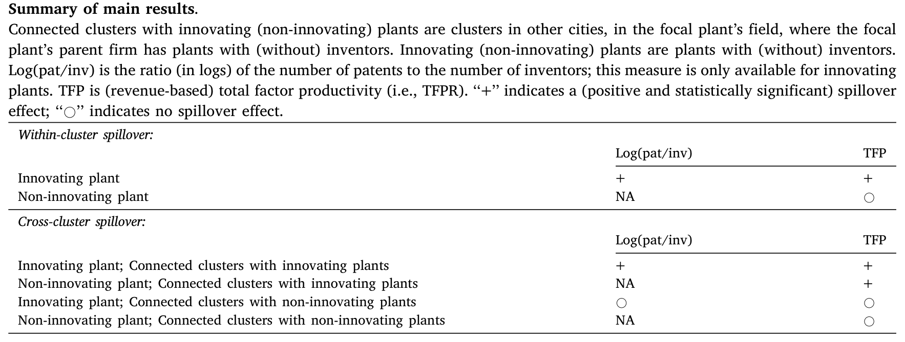
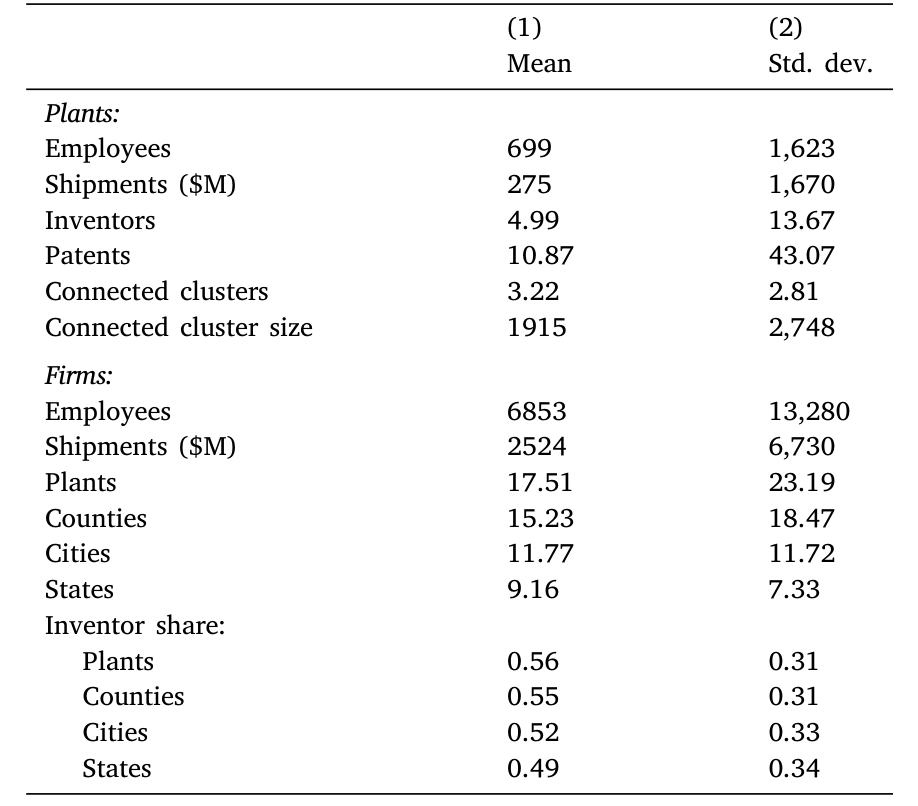
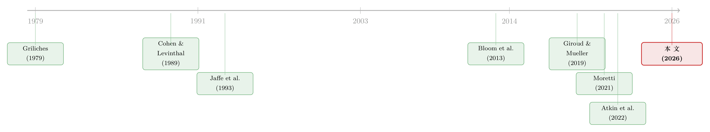

天线效应：硅谷为什么离不开波士顿？
本文读的是 Giroud, Liu & Mueller (2026, Journal of Financial Economics)：美国 80.7% 的发明家，受雇于那些「在别的科技集群也有发明家」的公司。作者用 USPTO 专利数据匹配上美国普查局的工厂级数据，证明一个更大的本地集群不仅让本地发明家更高产，还会穿过母公司的工厂网络，把生产率「输送」到几百英里之外、毫不相干城市里的工厂去。发明家在这里扮演的是「天线」——接收本地知识，再在公司内部把它转发出去。
1 引言：一个被忽略的事实
创新在空间上是高度不均匀的。硅谷、波士顿、纽约、洛杉矶、圣迭戈、西雅图——这几个大科技集群，贡献了美国绝大部分的专利产出。这不是新闻。更有意思的是，这些大集群不只是专利总量多，而是人均专利也多：同样一个发明家，放到更大的集群里，他会更高产。
这件事 Moretti（2021）已经讲得很清楚了。他证明，这种人均生产率的优势并非「更聪明的人自己跑去了大集群」的选择效应，而是大集群真的把人变得更能干——这就是经济学里讲了一百年的 马歇尔集聚外部性 (Marshallian agglomeration externalities)，其中最核心的一条，就是 本地知识溢出 (local knowledge spillovers)。知识是创新的关键投入，而知识在物理上是会「漏」的：同行下班后在酒吧里吹牛、在走廊里碰一面，知识就这么传开了。Jaffe、Trajtenberg 和 Henderson（1993）发现专利引用高度本地化，Atkin 等人（2022）甚至用智能手机的地理定位数据，直接捕捉到不同公司员工之间的「面对面会面」，并证明这种会面之后双方的专利互引显著上升（关于「把面对面社交从地理临近里剥离出来」这件事本身，可参见《见面，还重要吗？》）。
到这里，故事似乎已经讲完了：知识在本地溢出，所以大集群有优势。
但是——本文作者注意到一个几乎所有人都忽略了的事实：80.7% 的美国发明家，工作于那些在别的科技集群也雇着发明家的公司。
接着，一个非常自然的问题就冒出来了：如果知识能在本地、在不同公司的发明家之间漏来漏去，那么一个发明家，难道不会把吸收到的本地知识，带回自己公司内部、再传给公司在别的城市的同事吗？
2 发明家作为「天线」
这正是本文的核心隐喻，也是它真正的贡献所在。
把它讲透：知识在公司内部扩散，根本不需要依赖酒吧里的偶遇和走廊里的碰面。一封邮件、一份内部备忘录、一次视频会议，就够了。而且——这一点至关重要——知识在公司内部是 非竞争性 (non-rival) 的：硅谷的发明家学到的东西，可以零成本地被波士顿、被丹佛、被任何一个有公司工厂的城市拿去用，不会因为多用一次就「磨损」。Markusen（1984）早就点出了这个道理：一项创新一旦做出来，可以装进任意多的工厂而不削减它在已有工厂里的边际产出。
于是作者提出一个清晰的图景：
- 一个更大的本地集群，让本地发明家吸收到更多外部知识；
- 这些发明家，像天线一样，把知识接收下来、处理一遍，再通过公司内部网络转发给公司在其他集群的工厂；
- 所以，一个集群的大小，会通过母公司的工厂网络，外溢到几百英里之外——本文称之为 跨集群创新溢出 (cross-cluster innovation spillovers)。
但真正关键、也最反直觉的一步在于「天线」这个词的非对称含义：
发送端必须有发明家，接收端却不必。 如果母公司在某个集群只有工厂、没有发明家（一个「非创新工厂」），那么这个集群再大，也不会给公司带来任何好处——没有天线，信号收不到。反过来，只要发送端有发明家这根天线，接收端哪怕只是一个没有任何发明家的普通制造工厂，它的全要素生产率也照样能被抬高。
这就把「人均专利的提升」和「更广义的生产率提升」分开了：有些被转发的知识只对发明家的产出有用，有些则对整个工厂的生产率都有用。Table 1 把这套结论的全貌压缩成了一张「有 / 无溢出」的对照表——它是理解整篇论文的钥匙。

Table 1
这套「天线」解释，和 Cohen 与 Levinthal（1989）著名的 吸收能力 (absorptive capacity) 概念严丝合缝。他们当年就指出，企业投资研发「不仅是为了直接做出新工艺、新产品，也是为了利用外部可得的信息」——而要利用外部溢出，你得先有吸收它的能力。在本文里，发明家就是这种吸收能力的化身。
3 识别策略：怎么把「天线效应」从一堆混杂里捞出来
到这里都还是故事。然后，真正的难题来了：你怎么证明这种跨集群溢出真的存在，而不是某种统计幻觉？
本文的做法，是在 Moretti（2021）的研究设计上做扩展，识别的关键变量叫 连通集群 (connected clusters)：对某个焦点工厂而言，它指的是——在其他城市、在该工厂所在的研究领域、且母公司也在那里布有带发明家的工厂的那些集群里，其他公司的发明家数量。
换句话说，作者问的是：硅谷的工厂，会不会因为波士顿 128 号公路上别的公司多了一批发明家而变得更高产——前提是这家硅谷工厂的母公司在波士顿也有自己的、带发明家的工厂（那根天线）。
识别的威胁是显而易见的：母公司的工厂网络不是随机撒下的。一个城市-领域可能遭遇某种共同的技术冲击，既抬高了本地工厂的生产率，又同时吸引发明家流入与之相连的集群。怎么办？作者祭出两道防线：
第一道，是异常细粒度的固定效应。 回归里同时放入 工厂固定效应 (plant fixed effects) 和 城市 × 领域 × 年份固定效应 (city × field × year fixed effects)。这意味着：作者实际比较的，是同一个城市、同一个研究领域、同一年里的工厂——它们之所以连到不同的远方集群、生产率出现不同变化，仅仅因为它们隶属于拥有不同空间网络的不同母公司。城市层面、甚至城市-领域-年份层面的共同冲击，被固定效应吸干了。
第二道，是工具变量。 万一技术冲击发生在比「城市 × 领域 × 年份」还细的层面呢？作者设计了一个 工具变量 (instrumental variable, IV)：它利用那些「在多个地方有发明家、其中也包括焦点工厂的连通集群、但偏偏在焦点工厂自己的城市里没有任何业务」的公司。当这些公司在全美扩张或收缩研发时，它们在那些与焦点工厂母公司毫无交集的城市里的发明家数量变化，可以预测焦点工厂连通集群的大小，却又不太可能系统性地与焦点工厂自身的生产率冲击相关。排他性约束就建立在这种「素不相识的第三方公司」的外生扰动上。
4 数据
作者把 USPTO 专利数据库，与美国普查局三套机密的工厂级数据——纵向商业数据库 (Longitudinal Business Database, LBD)、制造业普查 (Census of Manufactures, CMF) 和年度制造业调查 (Annual Survey of Manufactures, ASM)——合并到一起。
- 样本期：专利申请年
1976到2018。 - 观测单位：工厂 × 年。专利通过发明家的居住地址被分配到 经济区 (BEA economic areas) 作为「城市」（全美共
179个，好处是它们对美国构成完整划分）；研究领域用 1 位 CPC 代码定义。 - 样本量：施加各种筛选后，「集群内溢出」样本有
134,000个工厂-年观测；进一步只保留「母公司在同领域、不同城市至少还有另一家带发明家工厂」的观测后，得到「跨集群溢出」样本，共57,000个工厂-年。 - 一个细节：在主分析样本里，一个工厂
86.8%的专利都落在它的「众数领域」里，所以用众数领域来定义工厂领域是合理的。
需要留意，由于 TFP 只能在被匹配进 CMF/ASM 的制造业工厂上计算，样本本质上是制造业工厂——这是后文讨论外推性时要记住的一个边界。Table 2 给出了工厂与企业层面的描述性统计。

Table 2: shows descriptive statistics for plants and firms in our
5 主要结果：量级有多大？
现在看数字。在基准设定里：
- 工厂 全要素生产率 (total factor productivity, TFP) 对「连通集群总规模」的弹性是
0.012； - 工厂层面 发明家生产率（人均专利，patents per inventor）的对应弹性是
0.021。
这两个弹性听上去很小，但作者给了一个非常直观的标尺：把一个工厂的连通集群，从分布的第 25 百分位换成第 75 百分位，那么这个工厂的发明家生产率会上升 8.2%、TFP 会上升 4.7%。也就是说，那些「连得多、连得大、或者两者兼具」的工厂，享受着可观的生产率溢价。
IV 估计略微噪一些，但与 OLS 惊人地接近——0.014 和 0.023——这强烈暗示：未观测的生产率冲击，并不是这套设计的主要偏误来源。这是一个让人安心的结果。
于是反转出现在两个「证伪」练习里，它们才是这篇论文最有说服力的地方：
其一，安慰剂连通集群。 如果用「母公司有工厂、但没有发明家」的城市（非创新工厂）来构造连通集群，跨集群溢出完全消失。没有天线，就没有信号——这正是「天线」机制最干净的检验。
其二，接收端不必有天线。 反过来，那些自己没有发明家的非创新工厂，只要母公司在连通集群里有带发明家的工厂，它们照样受益：TFP 弹性为 0.006，恰好是创新工厂的一半。这说明被转发的知识里，有一部分是「对生产率广泛有用」的，而不只是抬高发明家的人均专利。
最后，距离不重要。 既然知识在公司内部靠邮件、备忘录、视频会议传播，那它就不该随物理距离衰减。作者验证了这一点：把焦点工厂周围 100、250、500 英里半径内的连通集群统统剔除，所有估计依旧稳定、依旧显著。知识，确确实实是跨越大陆传过去的。
6 模型：从「天线」到「社会—私人创新楔子」
光有经验事实还不够。本文最有野心的一步，是搭一个可解的 空间创新模型 (model of spatial innovation)，把这些零散的弹性，焊接成一个能回答政策问题的框架。
模型的核心张力非常简单：企业投资创新来提升工厂生产率时，它会内部化对自己其他工厂的溢出（毕竟那也是自家的收益），却不会内部化对其他公司的溢出。正是这道「内部化」与「不内部化」之间的裂缝，制造了创新上的市场失灵——企业投资的，永远少于社会最优。
而跨集群溢出会让这道裂缝层层放大。一个工厂的创新投资，先溢出到本地别家工厂，再经由那些公司的网络传到别的集群；同时它也溢出到本公司在别处的工厂，再从那里传给当地别家公司的工厂。这两条链路递归地交织，产生高阶溢出，在整个经济体里层层传播。
为了把「哪个位置最该被补贴」这个问题量化，作者推导出一个充分统计量——社会—私人创新楔子 (social-private innovation wedge)：它度量在某个位置上，创新的社会回报与私人回报之间的差距。它最漂亮的性质是「可在数据中测量」：只要知道一个位置如何通过企业网络连到其他位置，再配上前面那些约化形式的溢出弹性，就能算出来。
在附录的福利推导里，作者证明了创新投资 \(k_{iJ}\) 的社会价值（对所有位置 \(n\) 的产出加总）有一个干净的表达式。我把它作为本节的核心方程，逐块拆开来看：
读懂这个方程，整篇论文的逻辑就闭环了：在 \(i\) 这个位置多投一单位创新，对全社会产出的拉动，正比于 \(b_i\)——也就是这个位置有多「四通八达」。私人企业看到的回报里，只含它自己网络内那部分；社会回报却含全部。两者之差，就是楔子。
进一步，作者把网络聚合量写成
$$ \beta_i \equiv \sum_{J \ni i} N_J\, \beta_{iJ}, \qquad \gamma_i \equiv \sum_{J \ni i} N_J\, \gamma_{iJ}, $$
它们把每个城市-领域单元 \(iJ\) 上的局部弹性，沿企业网络加总成位置 \(i\) 的总弹性。楔子最终就由这些聚合的网络弹性刻画。
把模型拿到数据上，作者对全美科技集群按楔子排序，得到一个有些反直觉的结论：
硅谷的社会—私人创新楔子高居前列，并不是因为它本地溢出有多强，而是因为它连到了许许多多其他集群、而那些集群又各自连到更多集群。换句话说，硅谷之所以「珍贵到被严重低估」，是它在网络中的枢纽地位，而不是它自身的体量。
最有力的验证是：这些位置楔子，与位置的「网络连通度」之间，相关系数高达 41%。最后的反事实练习更进一步——如果人为提高美国各科技集群之间的互联程度，几乎所有集群的楔子都会上升（创新不足更严重了），而其中上升最猛的，恰恰是那些「又大又连得好」的集群。
7 文献脉络
把这篇论文放回它所在的那条河流里，脉络其实相当清晰。
源头是创新溢出的经典文献。Griliches（1979）与 Jaffee（1986）确立了「企业会从其他企业的研发中受益」这一基本事实；Jaffe、Trajtenberg 和 Henderson（1993）则用专利引用证明知识溢出在地理上高度本地化。接着，Bloom、Schankerman 和 Van Reenen（2013）做出关键区分：把其他公司研发带来的（正向的）知识溢出，和（负向的）商业窃取效应分开。

然后，关注点从「企业间」转向了「企业内」。Giroud 与 Mueller（2019）证明企业的内部网络会传导本地经济冲击；Cravino 与 Levchenko（2017）、Bena 等人（2022）、Giroud 等人（2024）等则在跨区域、跨国层面追踪这种传导。另一条线上，Moretti（2021）把焦点收窄到「其他公司本地发明家」的溢出，并干净地证明了大集群让顶尖发明家更高产——这正是本文最直接的前身。与此同时，Atkin 等人（2022）用手机定位数据为「面对面 → 知识溢出」提供了迄今最直接的微观证据。
本文所处的位置，正是这两条线的交汇点：它接过 Moretti 的「本地溢出」，再借由 Giroud-Mueller 一脉的「企业内部网络」，证明本地溢出能沿着公司的创新工厂网络传遍整个经济体——并且，关键在于，光有工厂网络还不够，工厂还得有发明家这根天线。
8 评论与延伸（Q&A + 研究方向）
(a) 几个可能的疑问
Q：这跟 Moretti（2021）到底差在哪？不就是把他的回归多跑了一遍？
差别是质的。Moretti 问的是「更大的本地集群让本地发明家更高产吗」，是一个本地故事。本文问的是「更大的集群能否让几百英里外、毫不相干城市里的工厂更高产」，并把传导渠道明确指认为母公司的创新工厂网络。识别上，本文的连通集群变量、city×field×year 固定效应、以及「素不相识第三方公司」的 IV，都是为这个跨集群问题量身定做的。
Q：80.7% 这个数字会不会被几家巨头主导，没那么有代表性？
这是合理的担心。多集群运营的确更可能是大公司。但本文的识别并不依赖「公司大」，而依赖「同城同领域同年、但连到不同远方集群」的工厂间比较——巨头与否被固定效应大量吸收。真正驱动结果的是网络拓扑的差异，不是规模本身。
Q：安慰剂检验真的能排除「网络是内生选址」的担忧吗？
它排除了一大类。如果驱动结果的是「母公司把工厂选在了会一起变好的地方」，那么无论这些工厂有没有发明家，都该看到溢出。但事实是：没有发明家的非创新工厂构成的「安慰剂连通集群」给出零效应，而有发明家的天线给出显著效应。选址内生性很难解释这种只在有天线时才出现的非对称。
Q：弹性 0.012、0.021 这么小，值得大惊小怪吗？
弹性小，是因为「连通集群总规模」这个分母很大。换算成可感知的口径——从第 25 到第 75 百分位，TFP 提升
4.7%、人均专利提升8.2%——对一个工厂而言一点都不小。而且在加总到全经济、考虑高阶溢出后，它对总产出与最优创新政策的含义会被进一步放大。
Q：样本只是制造业工厂，结论能外推到软件、生物医药这些「典型科技集群」吗？
这是本文最诚实的边界。TFP 需要 CMF/ASM，所以可计算 TFP 的样本是制造业。作者也提供了不限于制造业、只算发明家生产率的稳健性结果。但「硅谷」在很多人心里是软件和芯片设计，把 TFP 的结论平移过去要谨慎——这恰恰是后续研究的空间。
Q：「距离不重要」会不会反而说明识别有问题——真溢出不该衰减吗？
恰恰相反。本地的、跨公司的知识溢出（酒吧、走廊）确实随距离衰减，这正是 Atkin 等人捕捉的那种。但本文讲的是公司内部的知识扩散，靠的是邮件和视频会议，本就不该随距离衰减。「剔除 500 英里内仍稳定」因此不是 bug，而是机制为真的标志。
(b) 几个可能的研究问题与提案
1. 把「天线网络」搬到信用市场：连通度是否被债券定价？
【经济故事】如果一家公司的工厂网络让它坐拥高「连通度」，那它实际享有一笔未被市场充分定价的隐性创新红利。信用利差里，有没有反映这种网络枢纽地位？高连通度的发行人，违约后的资产重置价值会不会更高？ 【可行性】中。可把本文的连通度统计量（用公开 USPTO + Compustat 工厂/分部数据近似）匹配到 TRACE 公司债利差上，做横截面定价回归。难点在于普查局工厂数据是机密的，公开复刻会有测量误差；识别上需要控制评级、久期、行业。
2. 外资持有人会不会改变「天线」的转发半径？
【经济故事】跨国公司天然横跨多个国家的集群。如果外资母公司更愿意（或更不愿意）在内部网络里转发知识，那么外资持股本身可能调节跨集群溢出的强度。这把「外资持有人」与「创新溢出」两条文献接上了。 【可行性】中偏低。需要把发明家-工厂网络扩展到跨国层面（PATSTAT + Orbis），并为外资持股找到外生变动（如指数纳入、双边税收协定）。数据可得但匹配工程量大，识别难度高。
3. 远程办公冲击：疫情后的「视频会议」是否放大了跨集群溢出？
【经济故事】本文断言公司内部知识靠邮件、视频会议传播、不随距离衰减。2020 年后远程协作工具的普及，相当于给「内部转发」做了一次外生提效。那么疫情后，跨集群溢出弹性是否上升、而本地（跨公司）溢出是否相对走弱？ 【可行性】高。USPTO 数据已更新至近年，可用 2020 作为事件时点做 DiD，比较「网络分散」与「网络集中」公司的发明家生产率变化。识别清晰，唯一约束是普查局 TFP 数据的更新滞后，可先用人均专利口径起步。
4. 流动性视角：被低估的「枢纽集群」里的企业，融资约束更松还是更紧？
【经济故事】社会—私人楔子说明枢纽集群的企业创造了未被自己拿走的社会价值。这部分「漏出去」的价值，会不会让这些企业在外部融资时反而吃亏（无法抵押无形溢出）？连通度高的企业，研发现金流敏感度是否更高？ 【可行性】中。可用连通度作为解释变量，研究研发-现金流敏感度与外部融资成本，借鉴 Amore 等人（2013）、Hombert 与 Matray（2017）的信贷-创新识别框架。
5. 标准化与网络枢纽的互动。
【经济故事】如果一家公司的专利更容易被纳入技术标准，它在网络里转发的知识价值会被放大。连通度高 × 专利「够格上标准」的企业，是否享有超额创新红利？这把本文与标准化文献接起来（可参见《谁的专利，配得上新标准？》）。 【可行性】中。需要标准必要专利 (SEP) 数据与连通度匹配，识别上要处理「上标准」本身的内生性。
我的判断
这是一篇方法干净、叙事克制、却把一个被忽视的事实做成大文章的论文。它最大的贡献，是把「集聚外部性」从一个本地概念，升级成一个网络概念——并且用「天线」这个非对称机制（发送端要有发明家、接收端不必）给出了一个极难被替代解释推翻的证伪设计。安慰剂连通集群给出零效应、IV 与 OLS 高度一致、溢出不随距离衰减，这三块证据叠在一起，说服力相当强。从约化形式一路推到可测的「社会—私人楔子」，再用 41% 的相关把模型和数据扣上，这种「事实—机制—政策」的闭环，是公司金融实证里少见的完整。
要说对识别的保留，我会盯住两处。其一，连通度终究来自企业历史上的选址决策，固定效应和 IV 能压住同期冲击，却较难完全排除「具有持续创新优势的公司，系统性地把网络铺得更广」这种慢变量的选择——IV 的相关性强度和排他性，值得在不同子样本里看得更细。其二，样本被 TFP 的可得性绑死在制造业上，而公众心智里的「科技集群」大量是非制造业；人均专利口径的结论能外推，TFP 口径要留余地。
后续我最想看到的，是把这套网络楔子用到政策反事实的福利数字上——既然模型说提高互联会加剧创新不足，那么一个针对「枢纽集群」的研发补贴，到底能挽回多少社会损失？以及，把「天线」机制移植到信用市场与外资持有人的场景里去——一家公司在创新网络中的枢纽地位，究竟有没有，又该不该，被它的债权人定价。
参考文献
- Atkin, D., Chen, K., Popov, A. (2022). The Returns to Face-to-Face Interactions: Knowledge Spillovers in Silicon Valley. NBER Working Paper 30147.
- Bloom, N., Schankerman, M., Van Reenen, J. (2013). Identifying Technology Spillovers and Product Market Rivalry. Econometrica 81, 1347–1393.
- Cohen, W., Levinthal, D. (1989). Innovation and Learning: The Two Faces of R&D. Economic Journal 99, 569–596.
- Giroud, X., Liu, E., Mueller, H. (2026). Innovation Spillovers Across U.S. Tech Clusters. Journal of Financial Economics 179, 104264.
- Giroud, X., Mueller, H. (2019). Firms' Internal Networks and Local Economic Shocks. American Economic Review 109, 3617–3649.
- Griliches, Z. (1979). Issues in Assessing the Contribution of Research and Development to Productivity Growth. Bell Journal of Economics 10, 92–116.
- Jaffe, A., Trajtenberg, M., Henderson, R. (1993). Geographic Localization of Knowledge Spillovers as Evidenced by Patent Citations. Quarterly Journal of Economics 108, 577–598.
- Kerr, W., Robert-Nicoud, F. (2020). Tech Clusters. Journal of Economic Perspectives 34, 50–76.
- Markusen, J. (1984). Multinationals, Multi-Plant Economies, and the Gains from Trade. Journal of International Economics 16, 205–226.
- Moretti, E. (2021). The Effect of High-Tech Clusters on the Productivity of Top Inventors. American Economic Review 111, 3328–3375.